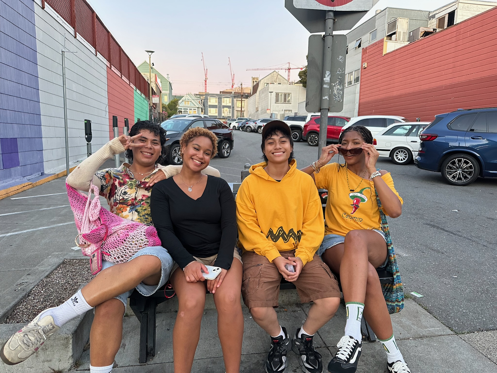
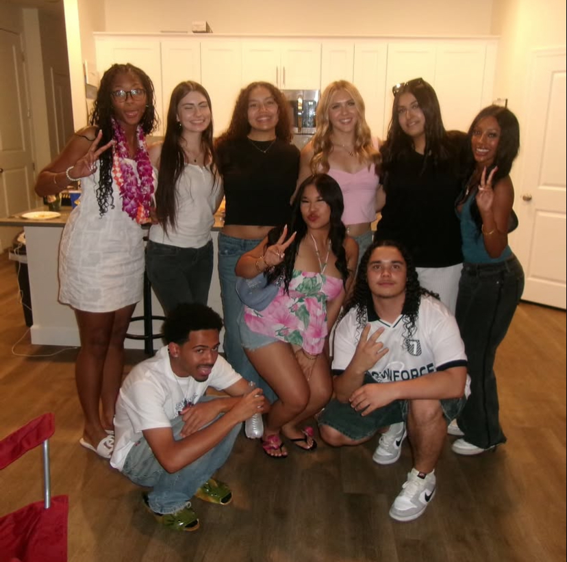
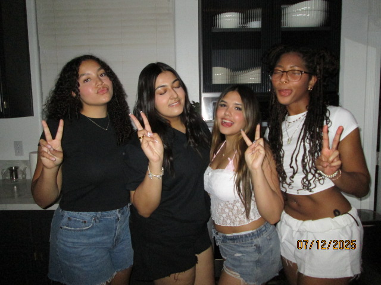
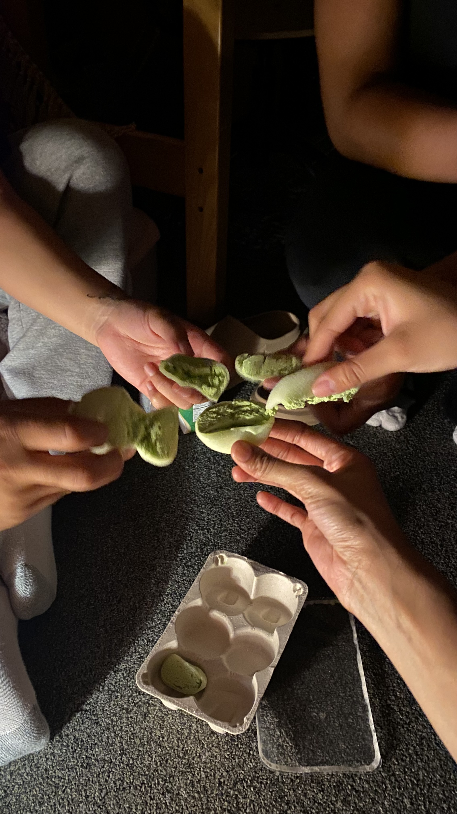
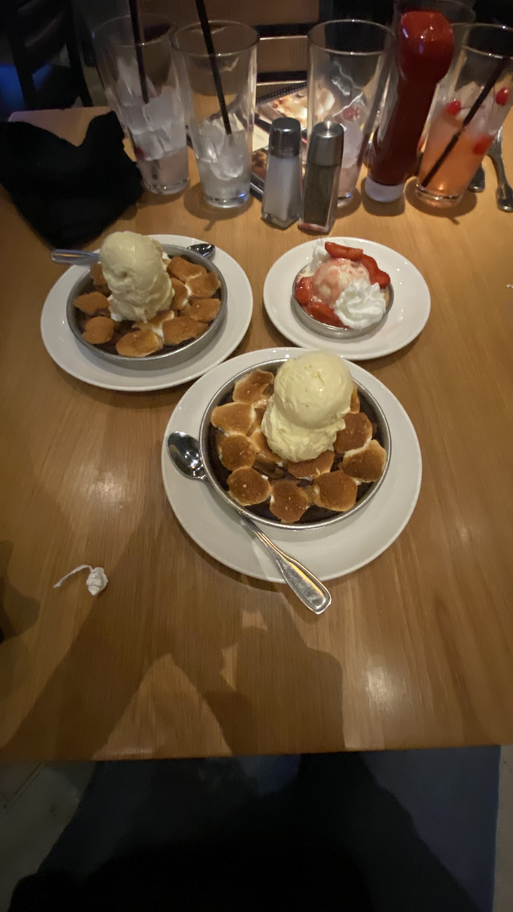
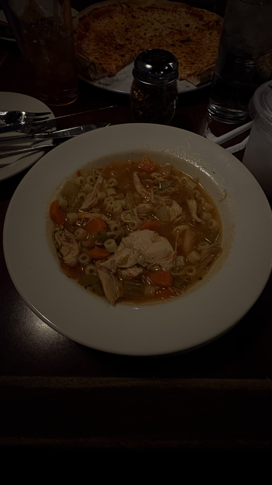

<!DOCTYPE html>
<head>
  <title> Morgan's Homepage </title>
  <style>
    
  </style>
</head>
<!DOCTYPE html>
<html>
<body style="background-color:powderblue;">
<h1 style="font-family:verdana;"><h1⋆｡˚☀︎｡ Morgan's "Favorite's" Webpage ⋆｡˚☀︎｡</h1>
</body>
</html>
<body>
</body>
<h2>Basics</h2>

<li> ⋆ Color(s): Orange and Blue</li>  
<li> ⋆ Class: Media Production</li>
<li> ⋆ Food: Thanksgiving Mac & Cheese </li>
<li> ⋆ Season: Summer</li>
<li> ⋆ Holiday: Valentine's Day </li>

<h2> Favorite Songs: (some of them) </h2>
<li> <a href="https://youtu.be/nNXSSfSmbao?si=_dbEWkcIPVwitOaA"> ⋆ Beaches - beabadoobee </a> </li>  
<li> <a href=https://youtu.be/RVKybVTCg1A?si=h4nTmWyQognJC-GT"> ⋆ Walk Away From Love - Bitty McLean</a> </li>
<li> <a href=https://youtu.be/zGjxUP4tgC8?si=ul5Epc5bguyG14Iy> ⋆ Candy - Ravyn Lenae </a> </li>
<li><a href=https://youtu.be/uCF2NgQffko?si=nj8cOUpTourFbCk_> ⋆ Walk To Class - Malcom Todd </a> </li>
<li><a href=https://youtu.be/VHGqsnsuA3c?si=WJ0q95pQW74erYsA> ⋆ Futura Free - Frank Ocean</a> </li>

<h2>Favorite Shows/Films </h2>
<li> <a href=https://www.imdb.com/title/tt14452776/?ref_=ext_shr_lnk> ⋆ The Bear</a></li>  
<li><a href=https://www.imdb.com/title/tt12878838/?ref_=ext_shr_lnk> ⋆ Bel-Air</a></li>
<li> <a href= https://www.imdb.com/title/tt4574334/?ref_=ext_shr_lnk> ⋆ Stranger Things </a> </li>
<li> <a href= https://www.imdb.com/title/tt8652728/?ref_=ext_shr_lnk> ⋆ Waves (2019)</a> </li>
<li> <a href= https://www.imdb.com/title/tt5052448/?ref_=ext_shr_lnk> ⋆ Get Out (2018)</a> </li>
<li> <a href= https://www.imdb.com/title/tt0147800/?ref_=ext_shr_lnk> ⋆ 10 Things I Hate About You (1999)</a> </li>


<h2>Favorite Things To Do</h2>
<body>
  <ol>Hangout with friends:
  </ol>
   

  
  
<ol> Eat!!!:
</ol>
  
  
  
  
<ol>And...
</ol>


